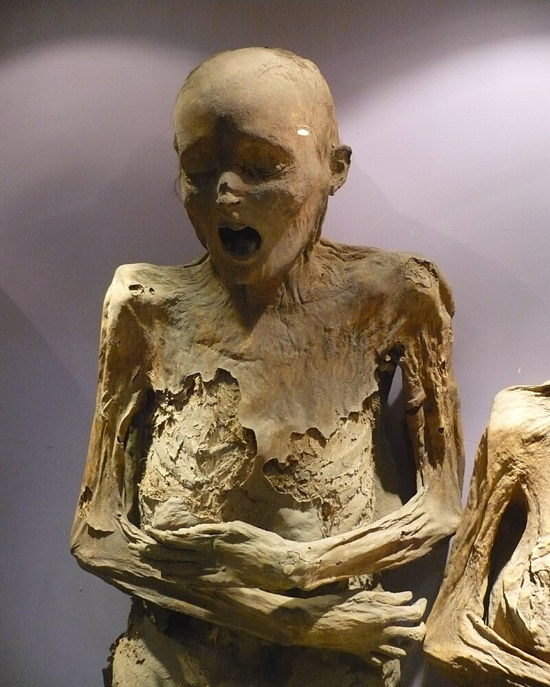
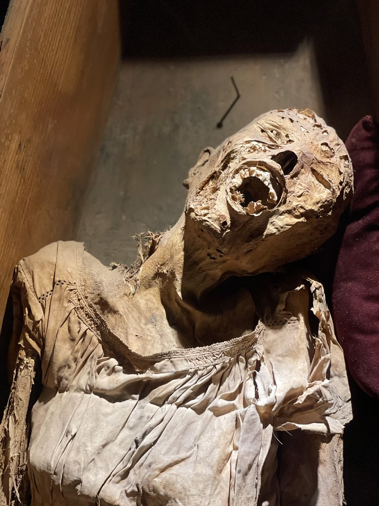
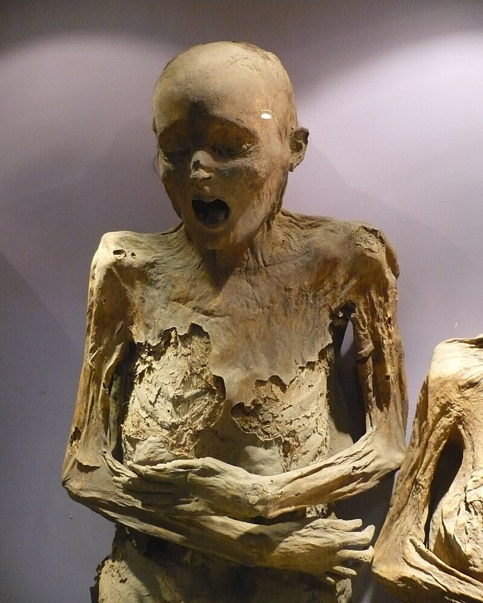
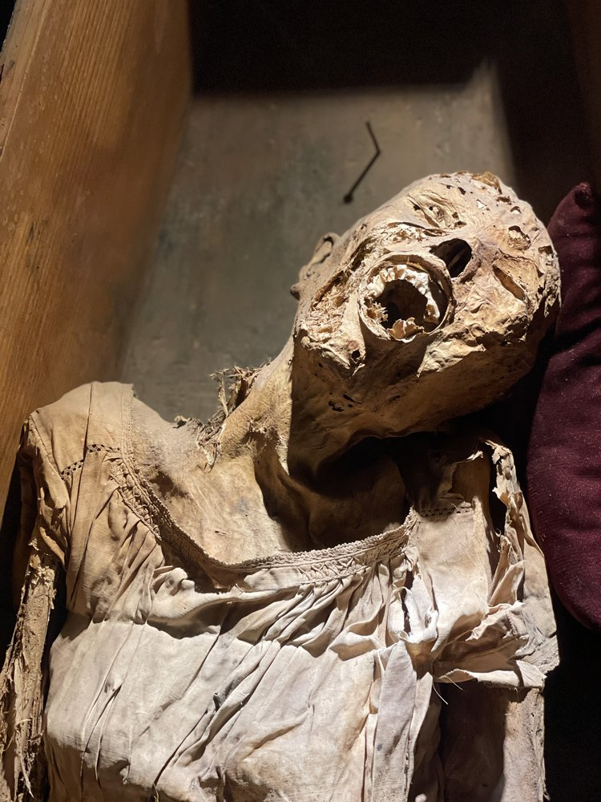

The 1870 Grave Tax law required families to pay monthly fee in order to keep loved ones buried. The bodies were dug up and temporarily kept in buildings near burial plots until family could pay the tax. The leftover bodies prompted the creation of El Museo de las Momias, where they were put on display. Most of these bodies were victims of the 1829 Cholera outbreak.